Basic Visium exploratory data analysis
Lambda Moses
2023-01-21
Source:vignettes/vig1_visium_basic.Rmd
vig1_visium_basic.RmdIntroduction
In this introductory vignette for SpatialFeatureExperiment
data representation and Voyager
anlaysis package, we demonstrate a basic exploratory data analysis (EDA)
of spatial transcriptomics data. Basic knowledge of R and SingleCellExperiment
is assumed.
This vignette showcases the packages with a Visium spatial gene expression system dataset. The technology was chosen due to its popularity, and therefore the availability of numerous publicly available datasets for analysis (Moses and Pachter 2022). The code can be run on Google Colab.

While Voyager was developed with the goal of facilitating the use of geospatial methods in spatial genomics, this introductory vignette is restricted to non-spatial scRNA-seq EDA with the Visium dataset. For a vignette illustrating univariate spatial analysis with the same dataset, see the more advanced exploratory spatial data analyis vignette with the same dataset.
Here we load the packages used in this vignette.
library(Voyager)
library(SpatialFeatureExperiment)
library(SingleCellExperiment)
#> Loading required package: SummarizedExperiment
#> Loading required package: MatrixGenerics
#> Loading required package: matrixStats
#>
#> Attaching package: 'MatrixGenerics'
#> The following objects are masked from 'package:matrixStats':
#>
#> colAlls, colAnyNAs, colAnys, colAvgsPerRowSet, colCollapse,
#> colCounts, colCummaxs, colCummins, colCumprods, colCumsums,
#> colDiffs, colIQRDiffs, colIQRs, colLogSumExps, colMadDiffs,
#> colMads, colMaxs, colMeans2, colMedians, colMins, colOrderStats,
#> colProds, colQuantiles, colRanges, colRanks, colSdDiffs, colSds,
#> colSums2, colTabulates, colVarDiffs, colVars, colWeightedMads,
#> colWeightedMeans, colWeightedMedians, colWeightedSds,
#> colWeightedVars, rowAlls, rowAnyNAs, rowAnys, rowAvgsPerColSet,
#> rowCollapse, rowCounts, rowCummaxs, rowCummins, rowCumprods,
#> rowCumsums, rowDiffs, rowIQRDiffs, rowIQRs, rowLogSumExps,
#> rowMadDiffs, rowMads, rowMaxs, rowMeans2, rowMedians, rowMins,
#> rowOrderStats, rowProds, rowQuantiles, rowRanges, rowRanks,
#> rowSdDiffs, rowSds, rowSums2, rowTabulates, rowVarDiffs, rowVars,
#> rowWeightedMads, rowWeightedMeans, rowWeightedMedians,
#> rowWeightedSds, rowWeightedVars
#> Loading required package: GenomicRanges
#> Loading required package: stats4
#> Loading required package: BiocGenerics
#>
#> Attaching package: 'BiocGenerics'
#> The following objects are masked from 'package:stats':
#>
#> IQR, mad, sd, var, xtabs
#> The following objects are masked from 'package:base':
#>
#> anyDuplicated, aperm, append, as.data.frame, basename, cbind,
#> colnames, dirname, do.call, duplicated, eval, evalq, Filter, Find,
#> get, grep, grepl, intersect, is.unsorted, lapply, Map, mapply,
#> match, mget, order, paste, pmax, pmax.int, pmin, pmin.int,
#> Position, rank, rbind, Reduce, rownames, sapply, setdiff, sort,
#> table, tapply, union, unique, unsplit, which.max, which.min
#> Loading required package: S4Vectors
#>
#> Attaching package: 'S4Vectors'
#> The following objects are masked from 'package:base':
#>
#> expand.grid, I, unname
#> Loading required package: IRanges
#> Loading required package: GenomeInfoDb
#> Loading required package: Biobase
#> Welcome to Bioconductor
#>
#> Vignettes contain introductory material; view with
#> 'browseVignettes()'. To cite Bioconductor, see
#> 'citation("Biobase")', and for packages 'citation("pkgname")'.
#>
#> Attaching package: 'Biobase'
#> The following object is masked from 'package:MatrixGenerics':
#>
#> rowMedians
#> The following objects are masked from 'package:matrixStats':
#>
#> anyMissing, rowMedians
library(SpatialExperiment)
library(scater)
#> Loading required package: scuttle
#> Loading required package: ggplot2
library(scran)
library(patchwork)
library(bluster)
library(SFEData)
library(BiocParallel)
library(stringr)
library(ggplot2)
library(sparseMatrixStats)
theme_set(theme_bw(10))Mouse skeletal muscle dataset
The dataset used in this vignette is from the paper Large-scale
integration of single-cell transcriptomic data captures transitional
progenitor states in mouse skeletal muscle regeneration (McKellar et al. 2021). Notexin was injected
into the tibialis anterior muscle of mice to induce injury, and the
healing muscle was collected 2, 5, and 7 days post injury for Visium
analysis. The dataset in this vignette is from the timepoint at day 2.
The vignette starts with a SpatialFeatureExperiment (SFE)
object.
The gene count matrix was directly downloaded from
GEO. All 4992 spots, whether in tissue or not, are included. The
tissue boundary was found by thresholding the H&E image in OpenCV,
and small polygons were removed as they are likely to be debris. Spot
polygons were constructed with the spot centroid coordinates and
diameter in the Space Ranger output. The in_tissue column
in colData indicates which spot polygons intersect the
tissue polygons, and is based on st_intersects().
Tissue boundary, nuclei, myofiber, and Visium spot polygons are
stored as sf data frames in the SFE object. The Visium spot
polygons are called “spotPoly” in this SFE object. The
SpatialFeatureExperiment package has a few convenience
wrappers to get and set common types of geometries, including
spotPoly() for Visium (or other technologies when relevant)
spot polygons, cellSeg() for cell segmentation,
nucSeg() for nuclei segmentation, and
centroids() for cell centroids. Behind the scene are
specially named sf data frames. See the
vignette of SpatialFeatureExperiment for more details
on the structure of the SFE object.
The SFE object of this dataset is provided in the
SFEData package; we begin by downloading the data and
loading it into R.
(sfe <- McKellarMuscleData("full"))
#> snapshotDate(): 2022-10-31
#> see ?SFEData and browseVignettes('SFEData') for documentation
#> loading from cache
#> class: SpatialFeatureExperiment
#> dim: 15123 4992
#> metadata(0):
#> assays(1): counts
#> rownames(15123): ENSMUSG00000025902 ENSMUSG00000096126 ...
#> ENSMUSG00000064368 ENSMUSG00000064370
#> rowData names(6): Ensembl symbol ... vars cv2
#> colnames(4992): AAACAACGAATAGTTC AAACAAGTATCTCCCA ... TTGTTTGTATTACACG
#> TTGTTTGTGTAAATTC
#> colData names(12): barcode col ... prop_mito in_tissue
#> reducedDimNames(0):
#> mainExpName: NULL
#> altExpNames(0):
#> spatialCoords names(2) : imageX imageY
#> imgData names(1): sample_id
#>
#> Geometries:
#> colGeometries: spotPoly (POLYGON)
#> annotGeometries: tissueBoundary (POLYGON), myofiber_full (POLYGON), myofiber_simplified (POLYGON), nuclei (POLYGON), nuclei_centroid (POINT)
#>
#> Graphs:
#> Vis5A:The authors provided the full resolution hematoxylin and eosin
(H&E) image on GEO, which we downsized to facilitate its display:

Quality control
Spots
We begin quality control (QC) by plotting various metrics both as
violin plots and in space. The QC metrics are pre-computed and stored in
colData (for spots) and rowData of the SFE
object.
names(colData(sfe))
#> [1] "barcode" "col" "row" "x" "y" "dia"
#> [7] "tissue" "sample_id" "nCounts" "nGenes" "prop_mito" "in_tissue"Below we plot the total unique molecular identifier (UMI) counts per spot. The commented out line of code shows how to compute the total UMI counts.
# colData(sfe)$nCounts <- colSums(counts(sfe))
violin <- plotColData(sfe, "nCounts", x = "in_tissue", colour_by = "in_tissue") +
theme(legend.position = "top")
spatial <- plotSpatialFeature(sfe, "nCounts", colGeometryName = "spotPoly",
annotGeometryName = "tissueBoundary") +
theme_void()
violin + spatial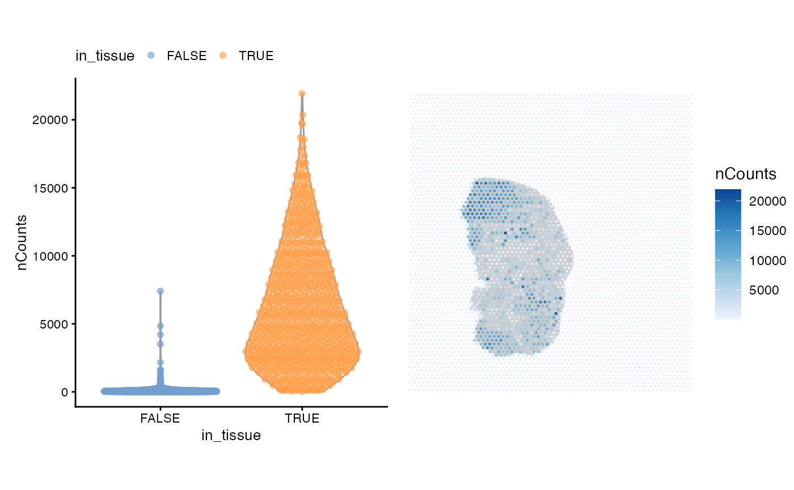
Some spots in the injury site with leukocyte infiltration have high total counts. Spatial autocorrelation of the total counts is apparent, which will be discussed in a later section of this vignette.
Next we find number of genes detected per spot. The commented out line of code shows how to find the number of genes detected.
# colData(sfe)$nGenes <- colSums(counts(sfe) > 0)
violin <- plotColData(sfe, "nGenes", x = "in_tissue", colour_by = "in_tissue") +
theme(legend.position = "top")
spatial <- plotSpatialFeature(sfe, "nGenes", colGeometryName = "spotPoly",
annotGeometryName = "tissueBoundary") +
theme_void()
violin + spatial
As commonly done for scRNA-seq data, here we plot nCounts vs. nGenes
plotColData(sfe, x = "nCounts", y = "nGenes", colour_by = "in_tissue")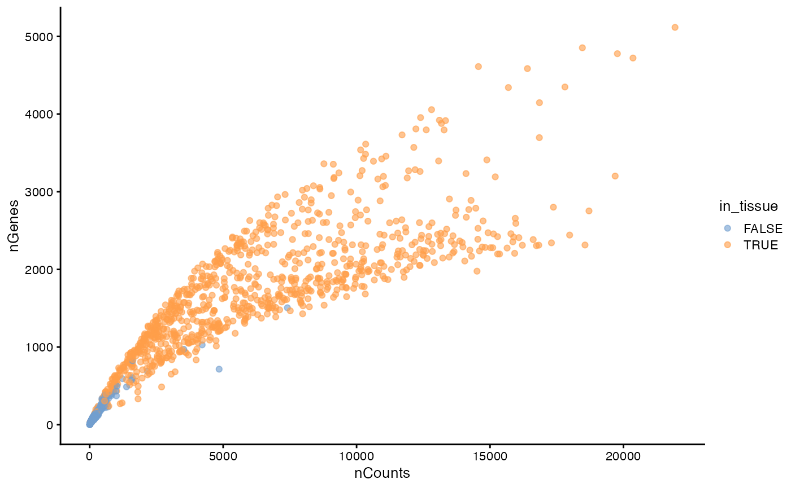
This plot has two branches for the spots in tissue, which turn out to be related to myofiber size. See the exploratory spatial data analysis (ESDA) Visium vignette.
As is commonly done for scRNA-seq data, we plot the proportion of mitochondrially encoded counts. The commented out code shows how to find this proportion:
# mito_ind <- str_detect(rowData(sfe)$symbol, "^Mt-")
# colData(sfe)$prop_mito <- colSums(counts(sfe)[mito_ind,]) / colData(sfe)$nCounts
violin <- plotColData(sfe, "prop_mito", x = "in_tissue", colour_by = "in_tissue") +
theme(legend.position = "top")
spatial <- plotSpatialFeature(sfe, "prop_mito", colGeometryName = "spotPoly",
annotGeometryName = "tissueBoundary") +
theme_void()
violin + spatial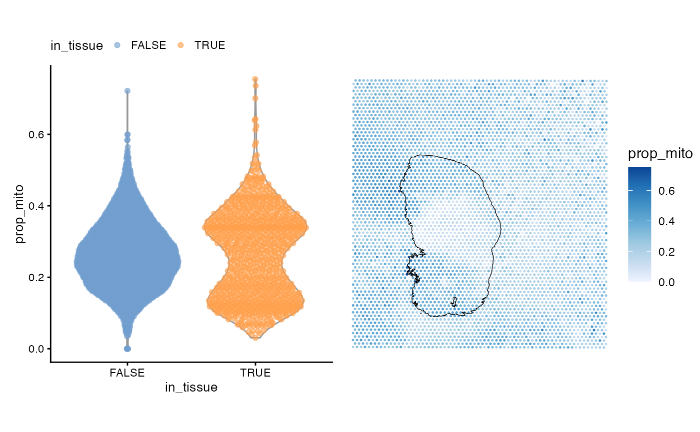
As expected, spots outside tissue have a higher proportion of mitochondrial counts, because when the tissue is lysed, mitochondrial transcripts are are less likely to degrade than cytosolic transcripts as they are protected by a double membrane. However, spots on myofibers also have a high proportion of mitochondrial counts, because of the function of myofibers. The injury site with leukocyte infiltration has a lower proportion of mitochondrial counts.
To see the relationship between the proportion of mitochondrial counts and total UMI counts, we plot them against each other as is commonly done in scRNA-seq analysis to identify low quality cells, i.e. cells with few UMI counts and a high proportion of mitochondrial counts.
plotColData(sfe, x = "nCounts", y = "prop_mito", colour_by = "in_tissue")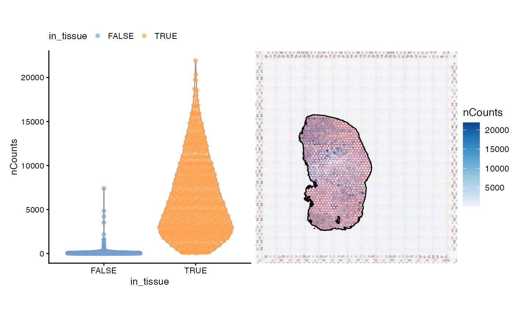
There are two clusters for the spots in tissue, which also turn out to be related to myofiber size. See the ESDA Visium vignette.
So far we haven’t seen spots that are obvious outliers in these QC metrics.
The following analyses only use spots in tissue, which are selected as follows:
Genes
As in scRNA-seq, gene expression variance in Visium measurements is overdispersed compared to variance of counts that are Poisson distributed.
To understand the mean-variance relationship, we compute the mean, variance, and coefficient of variance (CV2) for each gene among spots in tissue:
rowData(sfe_tissue)$means <- rowMeans(counts(sfe_tissue))
rowData(sfe_tissue)$vars <- rowVars(counts(sfe_tissue))
# Coefficient of variance
rowData(sfe_tissue)$cv2 <- rowData(sfe_tissue)$vars/rowData(sfe_tissue)$means^2To avoid overplotting and better show point density on the plot, we use a 2D histogram. The color of each bin indicates the number of points in that bin.
plotRowDataBin2D(sfe, "means", "vars", bins = 50) +
geom_abline(slope = 1, intercept = 0, color = "red") +
scale_x_log10() + scale_y_log10() +
annotation_logticks() +
coord_equal()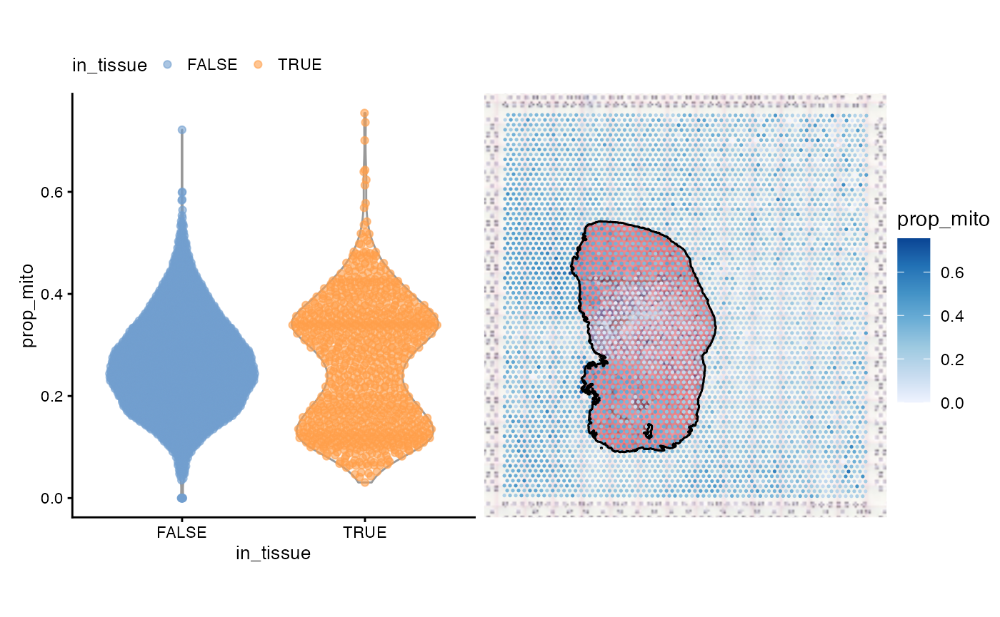
The red line, \(y = x\) is what is expected for Poisson distributed data, but we find that the variance is higher for more highly expressed genes than expected from Poisson distributed counts. The coefficient of variation shows the same.
plotRowDataBin2D(sfe, "means", "cv2", bins = 50) +
geom_abline(slope = -1, intercept = 0, color = "red") +
scale_x_log10() + scale_y_log10() +
annotation_logticks() +
coord_equal()
Normalize data
We demonstrate the use of scater for normalization
below, although we note that it is not necessarily the best approach to
normalizing spatial transcriptomics data. The problem of when and how to
normalize spatial transcriptomics data is non-trivial because, as the
nCounts plot in space shows above, spatial autocorrelation
is evident. Furthemrore, in Visium, reverse transcription occurs in situ
on the spots, but PCR amplification occurs after the cDNA is dissociated
from the spots. Artifacts may be subsequently introduced from the
amplification step, and these would not be associated with spatial
origin. Spatial artifacts may arise from the diffusion of transcripts
and tissue permeablization. However, given how the total counts seem to
correspond to histological regions, the total counts may have a
biological component and hence should not be treated as a technical
artifact to be normalized away as in scRNA-seq data normalization
methods. In other words, the issue of normalization for spatial
transcriptomics data, and Visium in particular, is complex and is
currently unsolved.
There is no one way to normalize non-spatial scRNA-seq data. The
commented out code implements the scran method (Lun, Bach, and Marioni 2016). To simplify the
matter, we only perform logNormCounts() in this
introductory vignette.
Note that scater’s logNormCounts() is quite
different from that in Seurat. Let \(N\) denote the total UMI count in one
Visium spot, \(\bar N\) the average
total UMI count in all spots in this dataset, and \(x\) denote the UMI count of one gene in the
Visium spot of interest. Seurat performs log normalization as \(\mathrm{log}\left( \frac{x}{N/10000} + 1
\right)\), where the natural log is used. In contrast, with
default parameters, scater uses \(\mathrm{log_2}\left( \frac{x}{N/\bar N} + 1
\right)\). The pseudocount (default to 1), library size factors
(default to \(N/\bar N\)), and
transform (default to log2) can be changed. Log 2 is used because
differences in values can be interpreted as log fold change.
# clusters <- quickCluster(sfe_tissue)
# sfe_tissue <- computeSumFactors(sfe_tissue, clusters=clusters)
# sfe_tissue <- sfe_tissue[, sizeFactors(sfe_tissue) > 0]
sfe_tissue <- logNormCounts(sfe_tissue)Next, we identify highly variable genes (HVGs), which will be used
for principal component analysis (PCA) dimensionality reduction. Again,
there are different ways to identify HVGs, and scater does
so differently from Seurat. In both frameworks, the log normalized data
is used by default. In summary, in Seurat, with default parameters, a
Loess curve is fitted to the log transformed data (the log normalized
data is log transformed for fitting purposes), and the fitted values are
exponentiated as the expected variance for each gene. Then the expected
variance and the mean are used to standardize the log normalized gene
expression; the standardized values are used to calculate a standardized
variance for each gene. The top HVGs are the genes with the largest
standardized variance.
In scater, with default parameters, a parametric
non-linear curve of variance vs. mean for each gene of the log
normalized data. Then the log ratio of the actual variance to the fitted
variance from the curve calculated, and a Loess curve is fitted to this
log ratio vs. mean for each gene. The “technical” component of the
variance is the fitted values from the Loess curve. The “biological”
component is the difference between the actual variance and the Loess
fitted variance. The top HVGs are genes with the largest biological
component. See the documentation of modelGeneVar(),
fitTrendVar(), and getTopHVGs() for more
details.
These differences can lead to different downstream results. While we don’t comment on which way is better in this vignette, it’s important to be aware of such differences.
dec <- modelGeneVar(sfe_tissue)
hvgs <- getTopHVGs(dec, n = 2000)Dimension reduction and clustering
sfe_tissue <- runPCA(sfe_tissue, ncomponents = 30, subset_row = hvgs,
scale = TRUE) # scale as in Seurat
ElbowPlot(sfe_tissue, ndims = 30)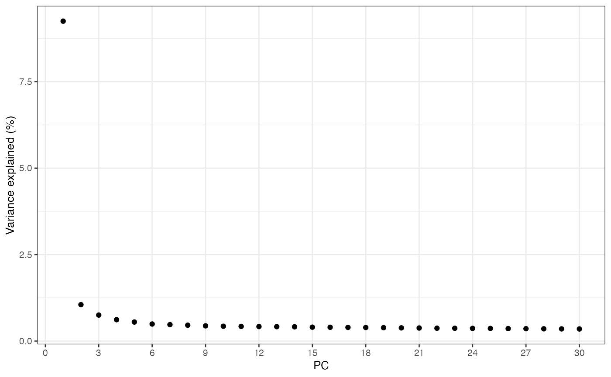
plotDimLoadings(sfe_tissue, dims = 1:4)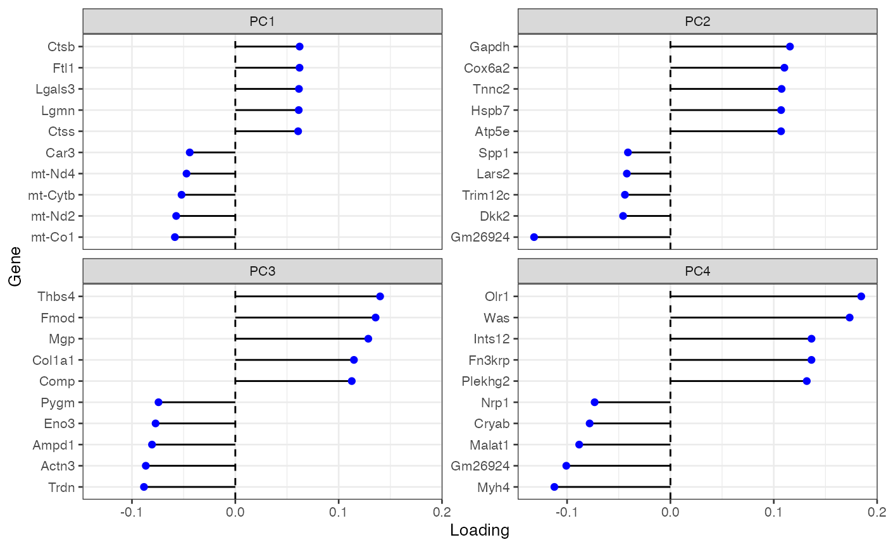
Do the clustering to show on the dimension reduction plots
colData(sfe_tissue)$cluster <- clusterRows(reducedDim(sfe_tissue, "PCA")[,1:3],
BLUSPARAM = SNNGraphParam(
cluster.fun = "leiden",
cluster.args = list(
resolution_parameter = 0.5,
objective_function = "modularity")))
plotPCA(sfe_tissue, ncomponents = 3, colour_by = "cluster")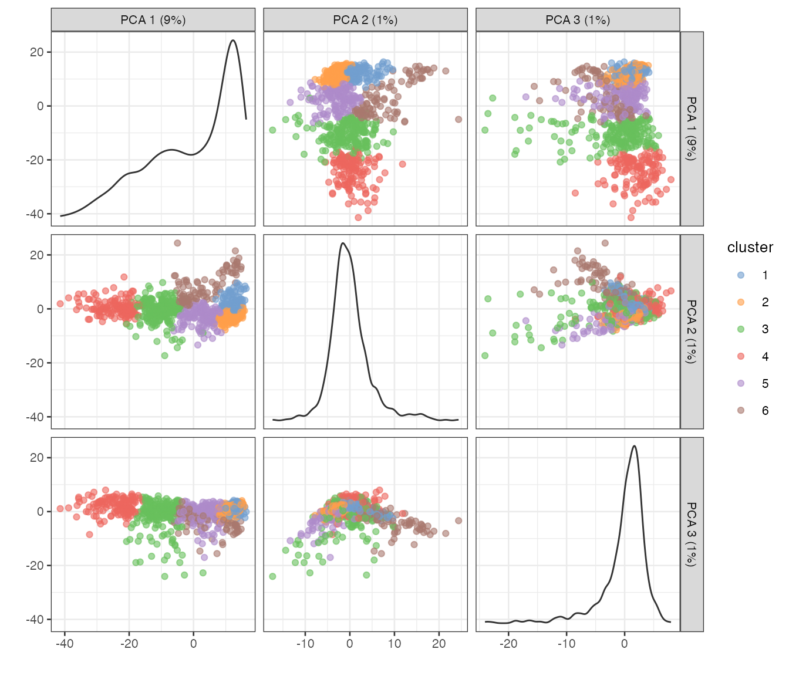
The principal components (PCs) can be plotted in space. Due to spatial autocorrelation of many genes and spatial regions of different histological characters, even though spatial information is not used in the PCA procedure, the PCs may show spatial structure.
spatialReducedDim(sfe_tissue, "PCA", ncomponents = 4,
colGeometryName = "spotPoly", divergent = TRUE,
diverge_center = 0) &
theme_void()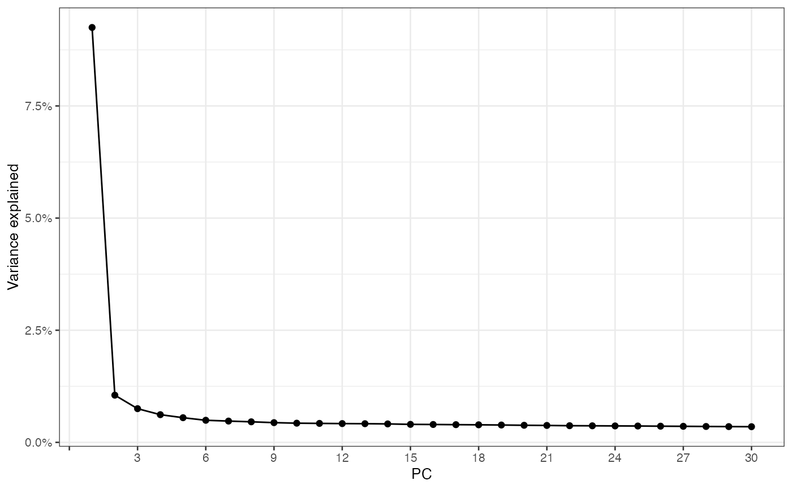
PC1, which explains far more variance than PC2, separates the injury site leukocytes and myofibers close to the site from the visium myofibers. PC2 highlight some myofibers near the edge. PC3 highlights the muscle tendon junctions. PC4 does not seem to be informative; it might have picked up an outlier.
It is also possible to run UMAP following the PCA, as is done for scRNA-seq. We do not recommend producing a UMAP since the procedure distorts distances, and does not respect either local or global structure in the data (Chari, Banerjee, and Pachter 2021). However, for completeness, we show how to compute a UMAP below:
plotUMAP(sfe_tissue, colour_by = "cluster")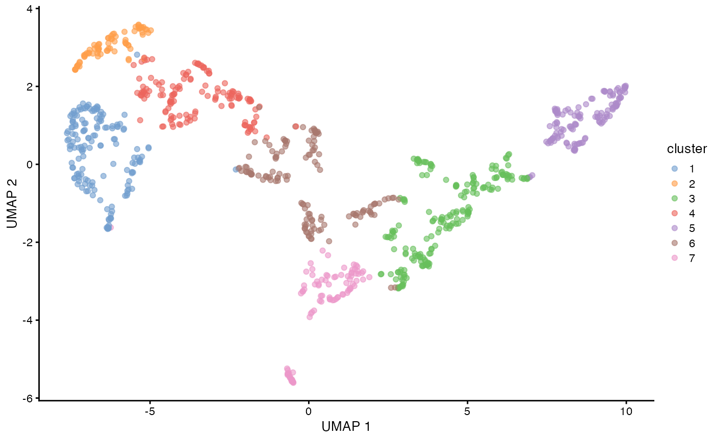
More interesting in spatial transcriptomics, is to locate the clusters in space, and this can be done as follows:
plotSpatialFeature(sfe_tissue, "cluster", colGeometryName = "spotPoly")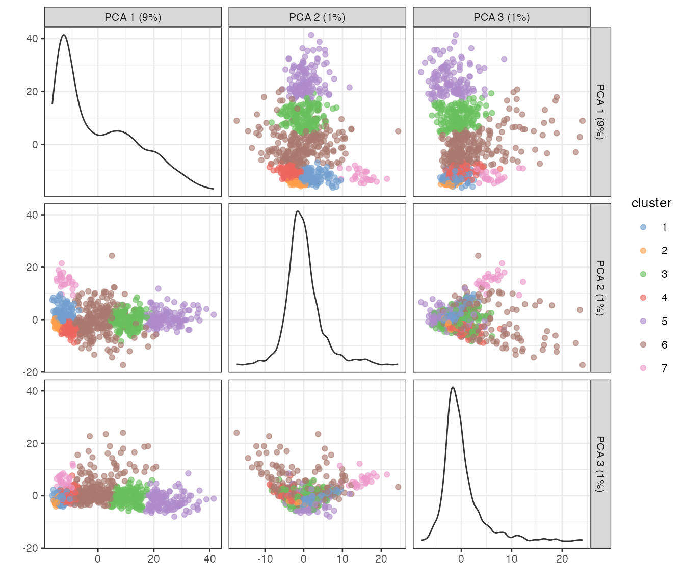
While spatial information is not explicitly used in clustering, due
to spatial autocorrelation of gene expression and the histological
regions, some of these clusters are spatially contiguous. There are many
methods to find spatially informed clusters, such as BayesSpace
(E. Zhao et al. 2021), which is on
Bioconductor.
Remark on spatial regions: In geographical space, there is usually no one single way to define spatial regions. For example, influenced by both sociology and geology, LA county can be partitioned into regions such as Eastside, Westside, South Central, San Fernado Valley, San Gabriel Valley, Pomona Valley, Gateway Cities, South Bay, and etc., each containing multiple smaller cities or parts of LA City, each of which can be further divided into many neighborhoods, such as Koreatown, Highland Park, Lincoln Heights, and etc. Definitions of some of these regions are subject to dispute. Meanwhile, LA county can also be partitioned into watersheds of the LA River, San Gabriel River, Ballona Creek, and etc., as well as different rock formations. Which kind of spatial region at which resolution is relevant depends on the question being asked. There are also gray areas in spatial regions. For example, the Whittier Narrows dam intercepts both the San Gabriel River and Rio Hondo (a large tributary of the LA River), so whether the dam area belongs to the watershed of San Gabriel River or LA River is unclear.
Similarly, in spatial transcriptomics, while methods identifying
spatial regions currently generally only aim to give one result,
multiple results at different resolutions depending on the question
asked may be relevant. Furthermore, methods for spatial region
demarcation to be used for spatial -omics would ideally provide
uncertainty assessments for assignment of cells or Visium spots. An
existing geospatial method that accounts for such uncertainty is geocmeans
(F. Zhao, Jiao, and Liu 2013), which is on
CRAN.
In both the geographical and histological space, there conflicting
views on spatial variation. On the one hand, methods that identify
spatially variable genes such as SpatialDE often assume that gene
expression vary smoothly and continuously in space. On the other hand,
methods identifying spatial regions attempt to identify discrete
regions. The continuous variation in features might be why definitions
of geographical neighborhoods are often subject to dispute. Some
existing methods attempt to harmonize the two views. For example, the
spatially variable gene method belayer
(Ma et al. 2022) takes discrete tissue
layers into account.
Non-spatial differential expression
Cluster marker genes can be found using differential analysis methods as is commonly done for scRNA-seq. Below is an example with the Wilcoxon rank sum test:
markers <- findMarkers(sfe_tissue, groups = colData(sfe_tissue)$cluster,
test.type = "wilcox", pval.type = "all", direction = "up")The result is sorted by p-values:
markers[[6]]
#> DataFrame with 15043 rows and 8 columns
#> p.value FDR summary.AUC AUC.1 AUC.2
#> <numeric> <numeric> <numeric> <numeric> <numeric>
#> ENSMUSG00000098178 1.33968e-10 2.01527e-06 0.736941 0.736941 0.932721
#> ENSMUSG00000033707 6.35679e-02 1.00000e+00 0.510526 0.510526 0.510526
#> ENSMUSG00000028031 1.04324e-01 1.00000e+00 0.521479 0.533069 0.539945
#> ENSMUSG00000049353 1.42040e-01 1.00000e+00 0.505263 0.505263 0.505263
#> ENSMUSG00000045319 1.42040e-01 1.00000e+00 0.505263 0.505263 0.505263
#> ... ... ... ... ... ...
#> ENSMUSG00000043969 1 1 0.5 0.5 0.500000
#> ENSMUSG00000091378 1 1 0.5 0.5 0.500000
#> ENSMUSG00000072437 1 1 0.5 0.5 0.500000
#> ENSMUSG00000003228 1 1 0.5 0.5 0.495283
#> ENSMUSG00000094649 1 1 0.5 0.5 0.497642
#> AUC.3 AUC.4 AUC.5
#> <numeric> <numeric> <numeric>
#> ENSMUSG00000098178 0.775869 0.910004 0.861166
#> ENSMUSG00000033707 0.510526 0.510526 0.510526
#> ENSMUSG00000028031 0.527655 0.535115 0.521479
#> ENSMUSG00000049353 0.505263 0.505263 0.505263
#> ENSMUSG00000045319 0.505263 0.505263 0.505263
#> ... ... ... ...
#> ENSMUSG00000043969 0.500000 0.496183 0.500000
#> ENSMUSG00000091378 0.500000 0.496183 0.500000
#> ENSMUSG00000072437 0.500000 0.492366 0.500000
#> ENSMUSG00000003228 0.477679 0.473282 0.490991
#> ENSMUSG00000094649 0.500000 0.500000 0.500000Significant markers for each cluster can be obtained as follows:
genes_use <- vapply(markers, function(x) rownames(x)[1], FUN.VALUE = character(1))
plotExpression(sfe_tissue, rowData(sfe_tissue)[genes_use, "symbol"], x = "cluster",
colour_by = "cluster", swap_rownames = "symbol")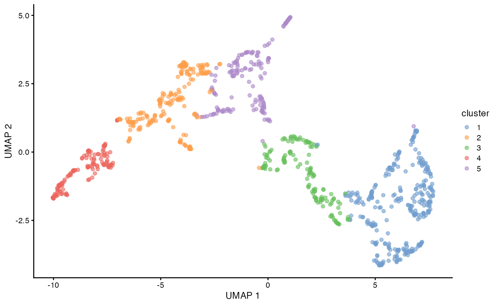
These genes are interesting to view in spatial context:
plotSpatialFeature(sfe_tissue, genes_use, colGeometryName = "spotPoly") &
theme_void()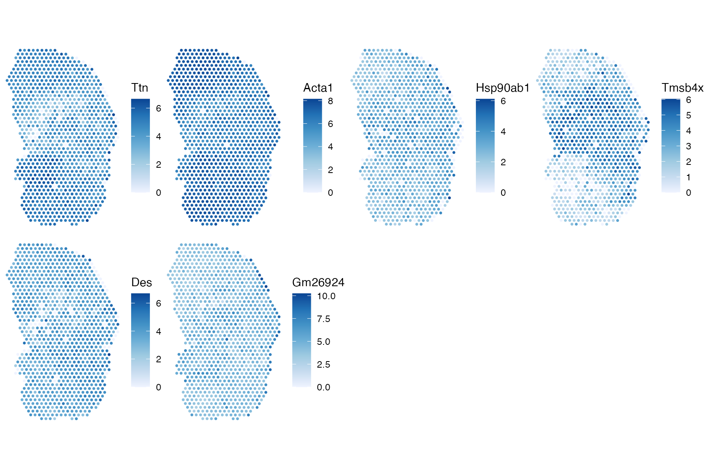
Moran’s I
Tobler’s first law of geography states that
Everything is related to everything else. But near things are more related than distant things.
This observation motivates the examination of spatial autocorrelation. Positive spatial autocorrelation is evident when nearby things tend to be similar, such as that weather in Pasadena and downtown Los Angeles (as opposed to the weather in Pasadena and San Francisco). Negative spatial autocorrelation is evident when nearby things tend to be more dissimilar, like squares on a chessboard. Spatial autocorrelation can be arise from an intrinsic process such as diffusion or communication by physical contact, or result from a covariate that has such an intrinsic process, or in areal data, when the areal units of observation are smaller than the scale of the spatial process.
The most commonly used measure of spatial autocorrelation is Moran’s I, defined as
\[ I = \frac{n}{\sum_{i=1}^n \sum_{j=1}^n w_{ij}} \frac{\sum_{i=1}^n \sum_{j=1}^n w_{ij} (x_i - \bar{x})(x_j - \bar{x})}{\sum_{i=1}^n (x_i - \bar{x})^2}, \]
where \(n\) is the number of spots
or locations, \(i\) and \(j\) are different locations, or spots in
the Visium context, \(x\) is a variable
with values at each location, and \(w_{ij}\) is a spatial weight, which can be
inversely proportional to distance between spots or an indicator of
whether two spots are neighbors, subject to various definitions of
neighborhood and whether to normalize the number of neighbors. The spdep
package uses the neighborhood.
Moran’s I is similar to the Pearson correlation between the value at
each location and the average value at its neighbors (but not identical,
see (Lee 2001)). Just like Pearson
correlation, Moran’s I is generally bound between -1 and 1, where
positive value indicates positive spatial autocorrelation and negative
value indicates negative spatial autocorrelation. Spatial dependence
analysis in spdep requires a spatial neighborhood graph.
The graph for adjacent Visium spot can be found with
colGraph(sfe_tissue, "visium") <- findVisiumGraph(sfe_tissue)We mentioned that spatial autocorrelation is apparent in total UMI counts. Here’s what Moran’s I shows:
calculateMoransI(t(colData(sfe_tissue)[,c("nCounts", "nGenes")]),
listw = colGraph(sfe_tissue, "visium"))
#> DataFrame with 2 rows and 2 columns
#> moran K
#> <numeric> <numeric>
#> nCounts 0.528705 3.00082
#> nGenes 0.384028 3.88036K means kurtosis. The positive values of Moran’s I indicate positive spatial autocorrelation.
Spatially variable genes
A spatially variable gene is a gene whose expression depends on
spatial locations, rather than being spatially random, like salt grains
spread on a soup. Spatially variable genes can be identified by spatial
autocorrelation signatures, and sometimes Moran’s I is used to compare
and assess spatially variable genes identified with different methods.
Below BPPARAM is used to parallelize the computation of
Moran’s I for 2000 highly variable genes, and 2 cores are used with the
SNOW backend.
sfe_tissue <- runMoransI(sfe_tissue, features = hvgs, colGraphName = "visium",
BPPARAM = SnowParam(2))
#> Warning: <anonymous>: ... may be used in an incorrect context: 'fun(x[i, ], listw, ...)'The results are stored in rowData
rowData(sfe_tissue)
#> DataFrame with 15043 rows and 8 columns
#> Ensembl symbol type means
#> <character> <character> <character> <numeric>
#> ENSMUSG00000025902 ENSMUSG00000025902 Sox17 Gene Expression 0.03969957
#> ENSMUSG00000096126 ENSMUSG00000096126 Gm22307 Gene Expression 0.00107296
#> ENSMUSG00000033845 ENSMUSG00000033845 Mrpl15 Gene Expression 0.38197425
#> ENSMUSG00000025903 ENSMUSG00000025903 Lypla1 Gene Expression 0.28755365
#> ENSMUSG00000033813 ENSMUSG00000033813 Tcea1 Gene Expression 0.26502146
#> ... ... ... ... ...
#> ENSMUSG00000064360 ENSMUSG00000064360 mt-Nd3 Gene Expression 56.445279
#> ENSMUSG00000064363 ENSMUSG00000064363 mt-Nd4 Gene Expression 123.991416
#> ENSMUSG00000064367 ENSMUSG00000064367 mt-Nd5 Gene Expression 14.645923
#> ENSMUSG00000064368 ENSMUSG00000064368 mt-Nd6 Gene Expression 0.109442
#> ENSMUSG00000064370 ENSMUSG00000064370 mt-Cytb Gene Expression 121.273605
#> vars cv2 moran_Vis5A K_Vis5A
#> <numeric> <numeric> <numeric> <numeric>
#> ENSMUSG00000025902 0.04460915 28.30429 NA NA
#> ENSMUSG00000096126 0.00107296 932.00000 NA NA
#> ENSMUSG00000033845 0.47048031 3.22458 NA NA
#> ENSMUSG00000025903 0.34686963 4.19497 NA NA
#> ENSMUSG00000033813 0.32388797 4.61140 0.0489758 19.2181
#> ... ... ... ... ...
#> ENSMUSG00000064360 2.47976e+03 0.778314 0.410657 11.31069
#> ENSMUSG00000064363 1.45282e+04 0.944991 0.546964 13.62886
#> ENSMUSG00000064367 2.34858e+02 1.094895 0.480634 3.75345
#> ENSMUSG00000064368 1.31941e-01 11.015664 NA NA
#> ENSMUSG00000064370 1.48225e+04 1.007833 0.621060 10.71784The NA’s are for genes that are not highly variable and
Moran’s I was not computed for those genes. We rank the genes by Moran’s
I and plot them in space as follows:
df <- rowData(sfe_tissue)[hvgs,]
ord <- order(df$moran_Vis5A, decreasing = TRUE)
df[ord, c("symbol", "moran_Vis5A")]
#> DataFrame with 2000 rows and 2 columns
#> symbol moran_Vis5A
#> <character> <numeric>
#> ENSMUSG00000064351 mt-Co1 0.764044
#> ENSMUSG00000050335 Lgals3 0.741474
#> ENSMUSG00000029304 Spp1 0.734937
#> ENSMUSG00000021939 Ctsb 0.708362
#> ENSMUSG00000004207 Psap 0.706552
#> ... ... ...
#> ENSMUSG00000039911 Spsb1 -0.0333357
#> ENSMUSG00000015711 Prune -0.0354638
#> ENSMUSG00000042675 Ypel3 -0.0369055
#> ENSMUSG00000090262 Mpv17 -0.0412250
#> ENSMUSG00000020964 Sel1l -0.0443975We see that some genes that have strong positive spatial autocorrelation, but don’t observe strong negative spatial autocorrelation. We can plot the genes with the strongest positive spatial autocorrelation in space:
plotSpatialFeature(sfe_tissue, rownames(df)[1:6], colGeometryName = "spotPoly") &
theme_void()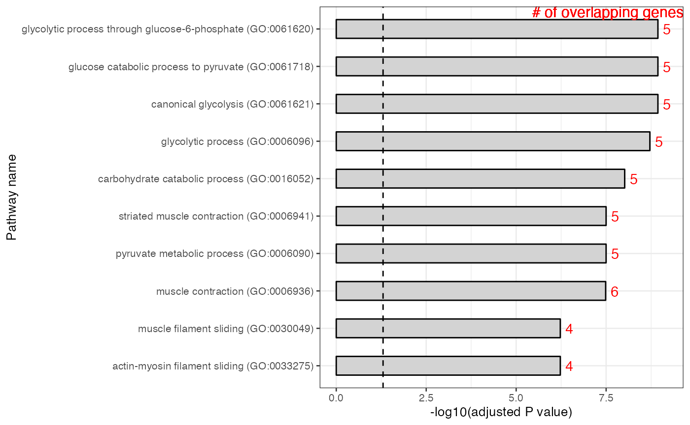
These genes do indeed look spatially variable. However, such spatial
variability can simply be due to the histological regions in space, or
in other words, spatial distribution of different cell types. There are
many methods to identify spatially variable genes, often involving
Gaussian process modeling, which are far more complex than Moran’s I,
such as SpatialDE
(Svensson, Teichmann, and Stegle 2018).
However, such methods usually don’t account for the histological
regions, except for C-SIDE (Cable et
al. 2022), which identifies spatially variable genes within cell
types. This leads to the question of what is really meant by “cell
type”. It remains to see how spatial methods made specifically for
identifying spatially variable genes compare with methods that don’t
explicitly use spatial information but simply perform differential
analysis between cell types which often are in spatially defined
histological regions.
Another consideration in using Moran’s I is the extent to which the strength of spatial autocorrelation varies in space. What if a gene exhibits strong spatial autocorrelation in one region, but not in another? Should the different histological regions be analyzed separately in some cases?
There are ways to see whether Moran’s I is statistically significant, and many other methods to explore spatial autocorrelation. These are discussed in the more advanced ESDA Visium vignette.
Session Info
sessionInfo()
#> R version 4.2.2 (2022-10-31)
#> Platform: x86_64-apple-darwin17.0 (64-bit)
#> Running under: macOS Big Sur ... 10.16
#>
#> Matrix products: default
#> BLAS: /Library/Frameworks/R.framework/Versions/4.2/Resources/lib/libRblas.0.dylib
#> LAPACK: /Library/Frameworks/R.framework/Versions/4.2/Resources/lib/libRlapack.dylib
#>
#> locale:
#> [1] en_US.UTF-8/en_US.UTF-8/en_US.UTF-8/C/en_US.UTF-8/en_US.UTF-8
#>
#> attached base packages:
#> [1] stats4 stats graphics grDevices utils datasets methods
#> [8] base
#>
#> other attached packages:
#> [1] sparseMatrixStats_1.10.0 stringr_1.5.0
#> [3] BiocParallel_1.32.5 SFEData_1.0.2
#> [5] bluster_1.8.0 patchwork_1.1.2
#> [7] scran_1.26.2 scater_1.27.3
#> [9] ggplot2_3.4.0 scuttle_1.8.4
#> [11] SpatialExperiment_1.8.0 SingleCellExperiment_1.20.0
#> [13] SummarizedExperiment_1.28.0 Biobase_2.58.0
#> [15] GenomicRanges_1.50.2 GenomeInfoDb_1.34.6
#> [17] IRanges_2.32.0 S4Vectors_0.36.1
#> [19] BiocGenerics_0.44.0 MatrixGenerics_1.10.0
#> [21] matrixStats_0.63.0 SpatialFeatureExperiment_1.0.3
#> [23] Voyager_1.0.7
#>
#> loaded via a namespace (and not attached):
#> [1] snow_0.4-4 AnnotationHub_3.6.0
#> [3] BiocFileCache_2.6.0 systemfonts_1.0.4
#> [5] igraph_1.3.5 sp_1.6-0
#> [7] digest_0.6.31 htmltools_0.5.4
#> [9] viridis_0.6.2 magick_2.7.3
#> [11] fansi_1.0.3 magrittr_2.0.3
#> [13] memoise_2.0.1 ScaledMatrix_1.6.0
#> [15] cluster_2.1.4 limma_3.54.0
#> [17] Biostrings_2.66.0 R.utils_2.12.2
#> [19] pkgdown_2.0.7 colorspace_2.0-3
#> [21] rappdirs_0.3.3 blob_1.2.3
#> [23] ggrepel_0.9.2 textshaping_0.3.6
#> [25] xfun_0.36 dplyr_1.0.10
#> [27] crayon_1.5.2 RCurl_1.98-1.9
#> [29] jsonlite_1.8.4 glue_1.6.2
#> [31] gtable_0.3.1 zlibbioc_1.44.0
#> [33] XVector_0.38.0 DelayedArray_0.24.0
#> [35] scico_1.3.1 BiocSingular_1.14.0
#> [37] DropletUtils_1.18.1 Rhdf5lib_1.20.0
#> [39] HDF5Array_1.26.0 scales_1.2.1
#> [41] DBI_1.1.3 edgeR_3.40.2
#> [43] Rcpp_1.0.9 xtable_1.8-4
#> [45] viridisLite_0.4.1 spData_2.2.1
#> [47] units_0.8-1 dqrng_0.3.0
#> [49] bit_4.0.5 spdep_1.2-7
#> [51] rsvd_1.0.5 proxy_0.4-27
#> [53] httr_1.4.4 metapod_1.6.0
#> [55] FNN_1.1.3.1 RColorBrewer_1.1-3
#> [57] ellipsis_0.3.2 wk_0.7.1
#> [59] farver_2.1.1 pkgconfig_2.0.3
#> [61] R.methodsS3_1.8.2 uwot_0.1.14
#> [63] dbplyr_2.3.0 sass_0.4.4
#> [65] deldir_1.0-6 locfit_1.5-9.7
#> [67] utf8_1.2.2 labeling_0.4.2
#> [69] AnnotationDbi_1.60.0 later_1.3.0
#> [71] tidyselect_1.2.0 rlang_1.0.6
#> [73] munsell_0.5.0 BiocVersion_3.16.0
#> [75] tools_4.2.2 cachem_1.0.6
#> [77] cli_3.6.0 dbscan_1.1-11
#> [79] ExperimentHub_2.6.0 generics_0.1.3
#> [81] RSQLite_2.2.20 evaluate_0.20
#> [83] fastmap_1.1.0 yaml_2.3.6
#> [85] ragg_1.2.5 knitr_1.41
#> [87] bit64_4.0.5 fs_1.5.2
#> [89] purrr_1.0.1 s2_1.1.2
#> [91] KEGGREST_1.38.0 mime_0.12
#> [93] R.oo_1.25.0 compiler_4.2.2
#> [95] png_0.1-8 interactiveDisplayBase_1.36.0
#> [97] filelock_1.0.2 curl_5.0.0
#> [99] beeswarm_0.4.0 e1071_1.7-12
#> [101] tibble_3.1.8 statmod_1.5.0
#> [103] bslib_0.4.2 stringi_1.7.12
#> [105] highr_0.10 desc_1.4.2
#> [107] lattice_0.20-45 Matrix_1.5-3
#> [109] classInt_0.4-8 vctrs_0.5.1
#> [111] pillar_1.8.1 lifecycle_1.0.3
#> [113] rhdf5filters_1.10.0 BiocManager_1.30.19
#> [115] jquerylib_0.1.4 BiocNeighbors_1.16.0
#> [117] cowplot_1.1.1 bitops_1.0-7
#> [119] irlba_2.3.5.1 httpuv_1.6.8
#> [121] R6_2.5.1 promises_1.2.0.1
#> [123] KernSmooth_2.23-20 gridExtra_2.3
#> [125] vipor_0.4.5 codetools_0.2-18
#> [127] boot_1.3-28.1 assertthat_0.2.1
#> [129] rhdf5_2.42.0 rprojroot_2.0.3
#> [131] rjson_0.2.21 withr_2.5.0
#> [133] GenomeInfoDbData_1.2.9 parallel_4.2.2
#> [135] grid_4.2.2 beachmat_2.14.0
#> [137] class_7.3-20 rmarkdown_2.20
#> [139] DelayedMatrixStats_1.20.0 ggnewscale_0.4.8
#> [141] sf_1.0-9 shiny_1.7.4
#> [143] ggbeeswarm_0.7.1